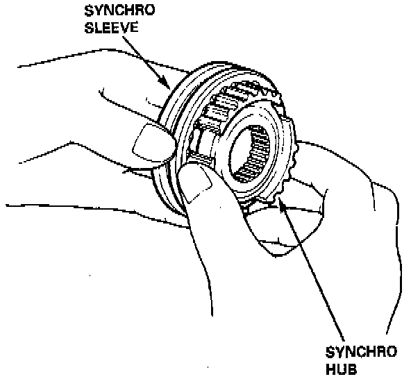

Synchronizer Hub: Testing and Inspection

1. Inspect gear teeth on all synchro hubs and synchro sleeves for rounded off corners, which indicates wear.
2. Install each synchro hub in its mating synchro sleeve and check for freedom of movement.
NOTE: If replacement is required, always replace the synchro sleeve and synchro hub as a set.